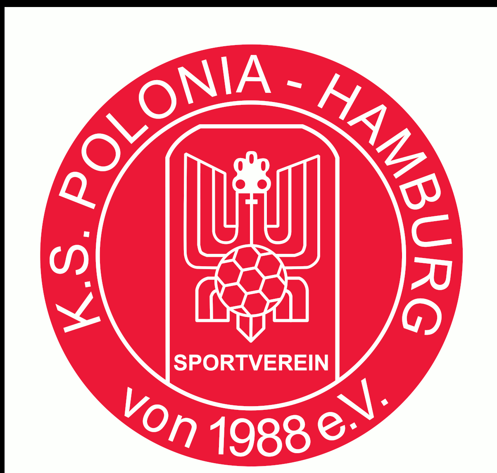

Clubraum 201 · Alternative B – Drei Bereiche
3D-Konzeptmodell · Croatia | Polonia | gemeinsamer Bereich · Entwurf 05 · 13.11.2026
Grundriss PDF
Elektroplan PDF
3D-Modell (GLB) ↓
Modell wird geladen …